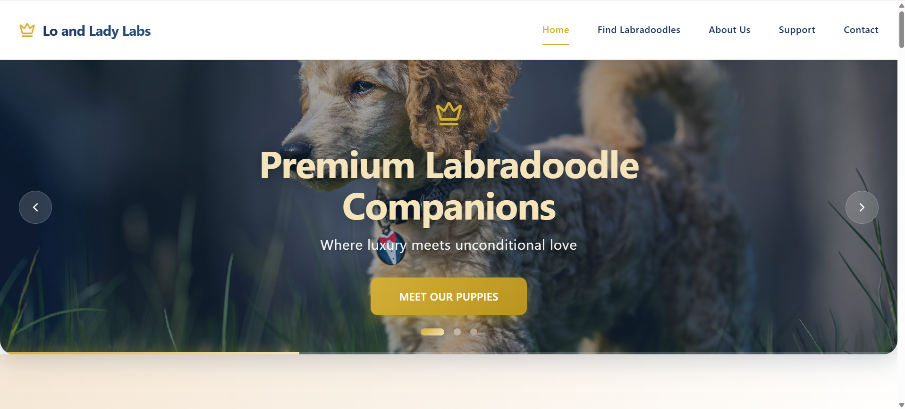
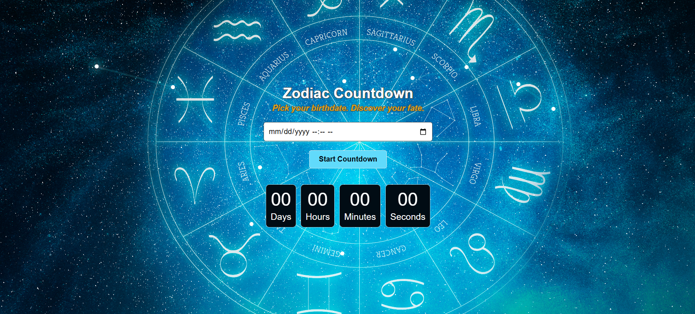
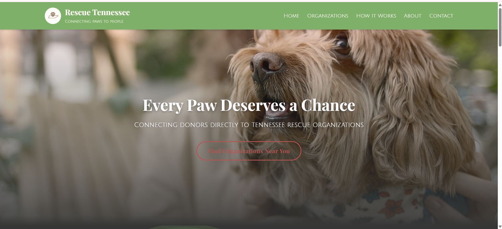
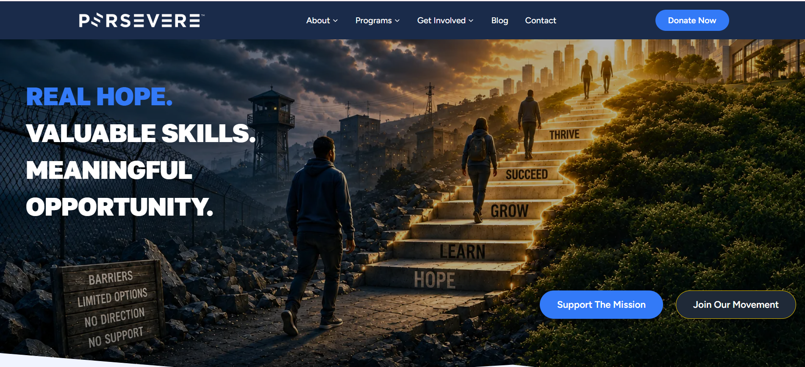

My Projects

Lo and Lady Labs
React-based puppy adoption platform with advanced search and interactive galleries.

Zodiac Countdown
Birthday countdown with personalized zodiac themes and yearly horoscopes.

Rescue Tennessee
Donation platform connecting donors with dog rescue organizations across Tennessee.

Office Supply Request
This is a Full-stack internal tool for submitting and managing office supply requests — built with Next.js, TypeScript, and Firebase.

Soul Study
AI-powered study companion for Sterile Processing Technician (SPD) certification prep. Built with Next.js and powered by Claude — featuring streaming chat with Askia (your AI study guide), flashcard decks, adaptive quizzes, and a personal dashboard that tracks your progress.

perseverenow.org
Persevere nonprofit website rebuild — Next.js 14, TypeScript, Tailwind